搭建在线编程环境
1. 服务器管理软件
我们已经有了FileZilla和本地的编程IDE（如VSCode)了，此时，为了管理Linux云服务器，需要一款管理终端。推荐使用PuTTY跨平台Telnet/SSH客户端。
2. 安装Docker容器环境
安装后，用PuTTY在链接云服务器，操作与FileZilla类似。
新建一个learn session后按 save > open
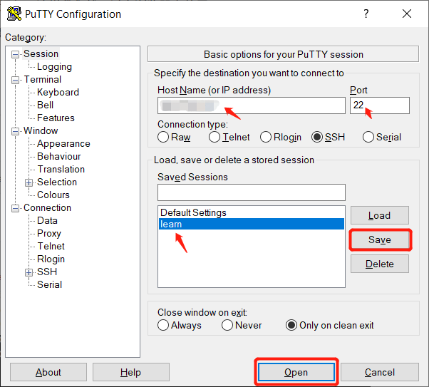
输入ECS实例的用户名root和密码
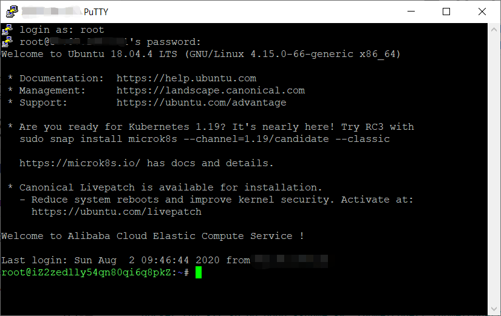
利用PuTTY终端安装Docker环境
Docker是Linux容器的封装，提供简易的容器接口。容器可以包含虚拟环境、软件、代码管理等，使得程序在容器中运行时不受系统环境影响。
PuTTY终端下，按鼠标右键可粘贴文本
curl -sSL https://get.daocloud.io/docker | sh |
安装Docker-Compose环境
curl -L https://get.daocloud.io/docker/compose/releases/download/<version>/dockercompose-`uname -s`-`uname -m` > /usr/local/bin/docker-compose |
chmod +x /usr/local/bin/docker-compose |
3. 部署Web IDE
我们将使用Code-Server，是一个通过本地浏览器直接访问远程服务器运行VS Code的工具。这样就不需要在本地开发，同步一个项目实例了。
继续使用PuTTY终端，首先在服务器上创建项目文件夹
mkdir -p /home/coder/project |
在Docker中运行code容器
docker run -it -p 80:8080 --name code -v "/home/coder/project:/home/coder/project" codercom/code-server:latest |
由于第一次执行时，我们还没下载过code-server镜像 (image)，终端会自行拉取(pull)镜像，再基于镜像创建并运行新的code-server容器 (container)。
从源地址下载可能很慢，所以上述指令可以改为
docker run -it -p 80:8080 --name code -v "/home/coder/project:/home/coder/" docker.mirrors.ustc.edu.cn/codercom/code-server |
报错
此处可能会遇到80端口已被使用的错误：Error starting userland proxy: listen tcp 0.0.0.0:80: bind: address already in use.
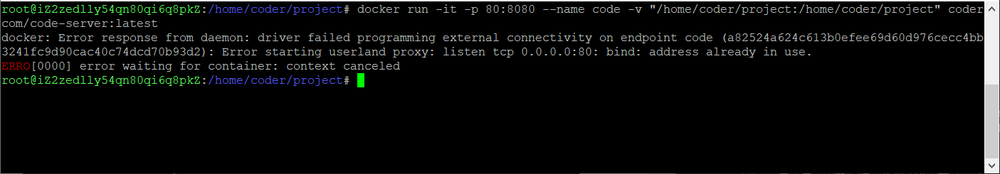
我的解决办法是使用8080端口即可，上述代码部分改成-p 8080:8080。
注意
注意，run指令只适用于新建一个容器并运行。如果你已经run过了这款镜像，即使遇到报错，是不能直接再run一次的。否则会提示以下错误
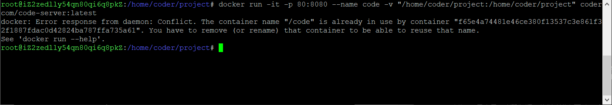
这时候，要先删除现有的容器。
查看现有容器的containerID
docker container ls -a |
停止并删除容器
docker stop <containerID> |
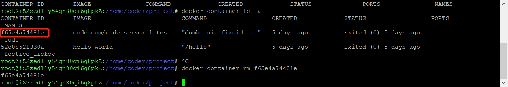
如果你的容器状态如上图般已经停止，可以直接rm。
接下来就可以重新run一个code-server容器了。
查找密码
按照教程，此时终端会直接显示容器的随机密码，复制即可。但我在实验中并没有得到相关输出
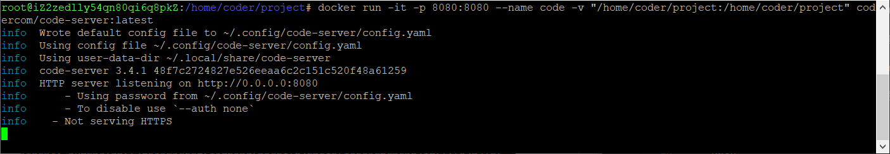
解决办法如下：
按Ctrl+C停止运行，查看容器ID后再开始
docker container ls -a //查看containerID |
打开容器,进入bash
docker exec -it code /bin/bash |
查看并复制密码
cat ~/.config/code-server/config.yaml |
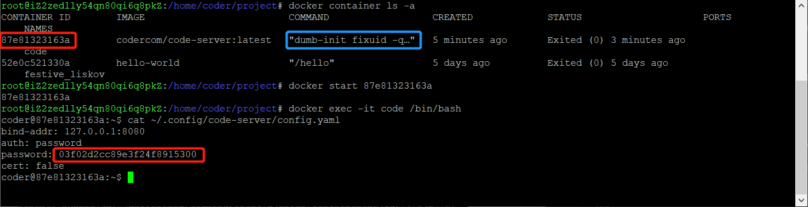
打开浏览器（chrome内核为佳），访问<公网IP>:8080，输入刚刚复制的随机密码
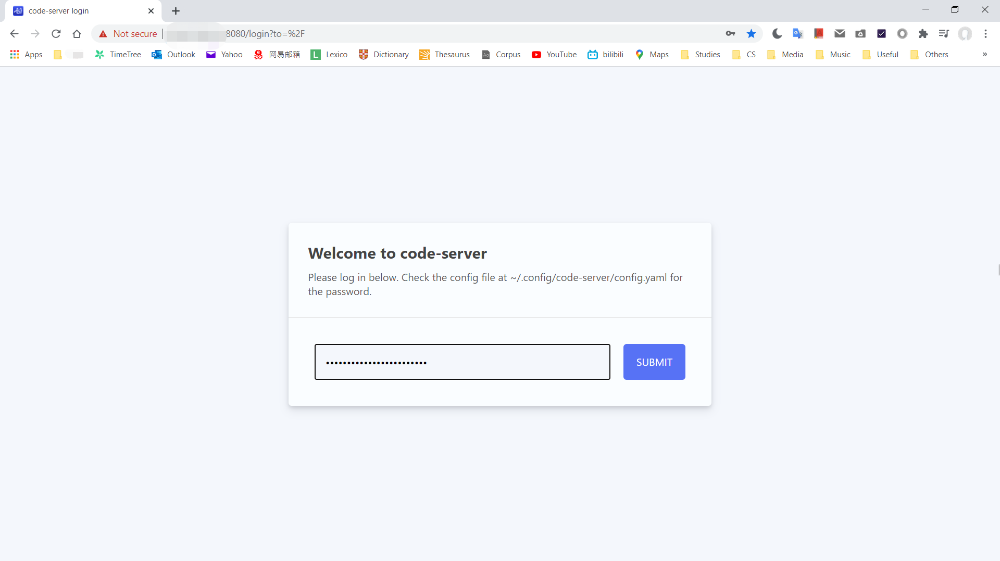
成功启动Web IDE
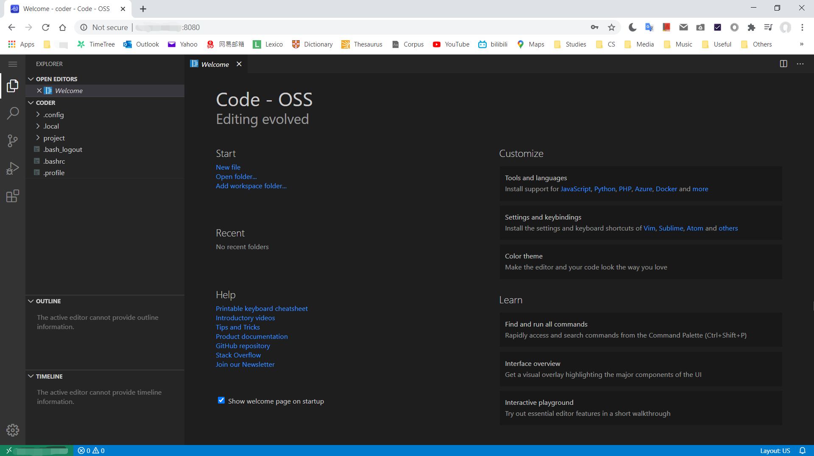
下一次打开PuTTY，使用容器，只需执行以下命令
systemctl start docker |
4. 使用Web IDE
Code-Server和VSCode使用方法一致。我们尝试新建一个shellscript(.sh)，保存。
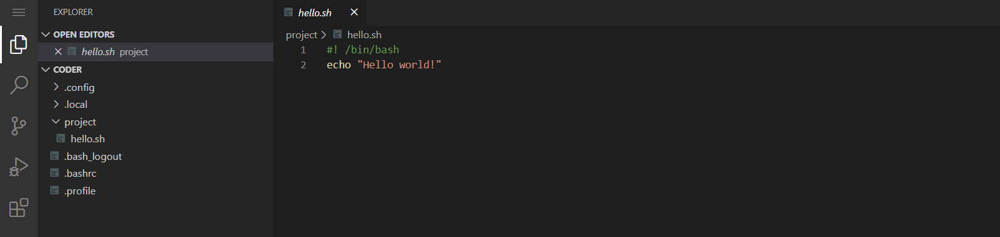
即可在PuTTY中运行（若PuTTY仍在容器bash模式中，先exit退出）
chmod +x hello.sh |
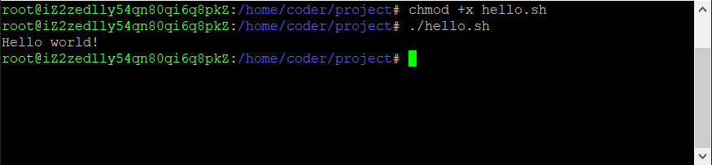
结束实验
docker stop <containerID> |
完成 ＼(￣▽￣)／